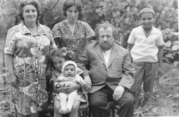
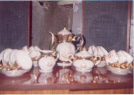

U
N
D
A
N
Y
G
A
N
O
V
>
I
N
Y
R
|

8Kyly5lao5kyly er;ank ergir7779
|  |
 |
|  |
Mynk abryl ynk k7<amqor AziÐAslanovm
danu1 Myr nor ;a.amasovm5min[¦ ca.;u abrovm eink ,ad
hamyra,q5ovnyink mdyrim har¦annyr5 pa3x nranx my]
cdnwyxin tawajan har¦annyr5 oronk tym tovrs ygan myz1
Amovsnovs ;ovrkyru /y/yxin5w-ntyxin5 dovnu mnax sgysra3rs ¥amovsnovs
ha3ru»1 Wyr]ovm iryn el mi law /y/yxin5 qo,dancyxin ¦a-anx
,or ov go,ig w-ntyxin tovrs1 Qy.j /yru [ors dari a-a]
mahaxaw1 Myz amyna modig ;ovrk har¦anu myz nwiryx ir
2y-ki =amaxov3xu ¦ asax
78Imaxir5in[kan el ovzovm e myr
azcov;3ovnnyru ;,mananan5mi¦nov3n e5mynk mdyrimnyr
gmnank1 Pa3x ys ca.;ylovx hydo waqyxa nran namag cryl5
mda/yyyxi5or iryn garo. e tra hamar wnasyn1 Mynk ,ad ynk
sirovm myr hin dovnu5 mi,d el garodow ynk hi,ovm5 aqr mynk
mi,d law eink abryl1 MygÐmyg5or t=cohovm ynk5 a3=m3an
soxialagan /anr ba3mannyrix amovsins sgsovm e yrcyl ir sira/
yrcu
78Kyly5lao5kyly er;ank ergir77791
|
|
|